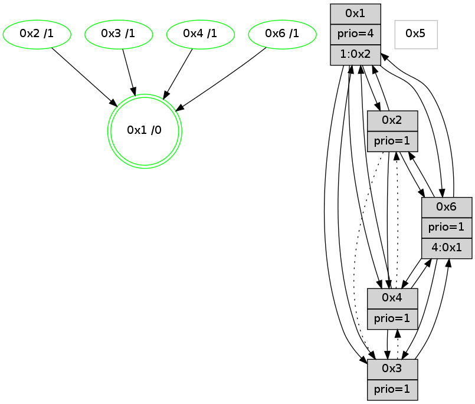

>> << IDX [start] -100 -25 -5 +0 +5 +25 +100 [775.219985008]
 Previous packets
----------------------------------------------------------------------
770.298907 beacon01(adaf) #0 coord=01,02,05,03,04,06 cycle=432.0ms assoc
-- color-indic=1 64 06 34
770.308869 beacon02(adaf) #0 coord=01,02,05,03,04,06 cycle=432.0ms assoc 64 57 cb
770.318868 beacon05(adaf) #0 coord=01,02,05,03,04,06 cycle=432.0ms assoc 64 f1 e1
770.328869 beacon03(adaf) #0 coord=01,02,05,03,04,06 cycle=432.0ms assoc 64 6d c5
770.338868 beacon04(adaf) #0 coord=01,02,05,03,04,06 cycle=432.0ms assoc 64 cb ef
770.348869 beacon06(adaf) #0 coord=01,02,05,03,04,06 cycle=432.0ms assoc 64 bf f3
770.360614 [Hello(6): seq=487 sym=3,4,1,2 sysInfo=hasWarning,coloring-mode-on,ColoringModeIndicationCalled stat=3:4,0,7,1/4:0,0,0,0/1:13,0,11,0/2:5,0,2,2]
770.366184 [TreeStatus(1) #0.53 new-neigh,tree-change,stable child=4]
770.368338 [Color(1) seq=0 @0:0 prio=4]
----------------------------------------------------------------------
770.791015 beacon01(adaf) #0 coord=01,02,05,03,04,06 cycle=432.0ms assoc
-- color-indic=1 64 4a 84
770.800975 beacon02(adaf) #0 coord=01,02,05,03,04,06 cycle=432.0ms assoc 64 1b 7b
770.810976 beacon05(adaf) #0 coord=01,02,05,03,04,06 cycle=432.0ms assoc 64 bd 51
770.820976 beacon03(adaf) #0 coord=01,02,05,03,04,06 cycle=432.0ms assoc 64 21 75
770.830976 beacon04(adaf) #0 coord=01,02,05,03,04,06 cycle=432.0ms assoc 64 87 5f
770.840977 beacon06(adaf) #0 coord=01,02,05,03,04,06 cycle=432.0ms assoc 64 f3 43
770.853347 [Color(6) seq=0 @0:0 prio=1]
770.857423 [Hello(4): seq=574 sym=3,6,1 asym=2 sysInfo=coloring-mode-on,ColoringModeIndicationCalled stat=3:1,0,1,0/6:6,0,5,10/1:11,1,11,1/2:0,0,0,0]
770.859425 [Hello(2): seq=1064 sym=6,4,1,3 sysInfo=coloring-mode-on,ColoringModeIndicationCalled stat=6:11,0,1,3/4:0,0,0,0/1:8,1,10,1/3:7,0,5,1]
770.861275 [Color(4) seq=0 @0:0 prio=1]
770.862564 [Color(2) seq=0 @0:0 prio=1]
770.864823 [Color(3) seq=0 @0:0 prio=1]
770.866517 [Hello(1): seq=473 sym=2,3,4,6 sysInfo=coloring-mode-on,ColoringModeRequestCalled stat=2:12,0,2,2/3:8,0,7,1/4:0,0,1,0/6:11,0,4,3]
----------------------------------------------------------------------
771.283122 beacon01(adaf) #0 coord=01,02,05,03,04,06 cycle=432.0ms assoc
-- color-indic=1 64 8e eb
771.293084 beacon02(adaf) #0 coord=01,02,05,03,04,06 cycle=432.0ms assoc 64 df 14
771.303085 beacon05(adaf) #0 coord=01,02,05,03,04,06 cycle=432.0ms assoc 64 79 3e
771.313085 beacon03(adaf) #0 coord=01,02,05,03,04,06 cycle=432.0ms assoc 64 e5 1a
771.323085 beacon04(adaf) #0 coord=01,02,05,03,04,06 cycle=432.0ms assoc 64 43 30
771.333084 beacon06(adaf) #0 coord=01,02,05,03,04,06 cycle=432.0ms assoc 64 37 2c
771.344831 [Hello(6): seq=488 sym=3,4,1,2 sysInfo=hasWarning,coloring-mode-on,ColoringModeIndicationCalled stat=3:5,1,7,1/4:0,1,0,0/1:14,1,11,1/2:6,1,2,2]
771.349855 [Color(1) seq=1 @0:0 prio=4]
----------------------------------------------------------------------
771.775230 beacon01(adaf) #0 coord=01,02,05,03,04,06 cycle=432.0ms assoc
-- color-indic=1 64 c3 ec
771.785197 beacon02(adaf) #0 coord=01,02,05,03,04,06 cycle=432.0ms assoc 64 92 13
771.795192 beacon05(adaf) #0 coord=01,02,05,03,04,06 cycle=432.0ms assoc 64 34 39
771.805192 beacon03(adaf) #0 coord=01,02,05,03,04,06 cycle=432.0ms assoc 64 a8 1d
771.815192 beacon04(adaf) #0 coord=01,02,05,03,04,06 cycle=432.0ms assoc 64 0e 37
771.825192 beacon06(adaf) #0 coord=01,02,05,03,04,06 cycle=432.0ms assoc 64 7a 2b
771.837320 [Hello(1): seq=474 sym=2,3,4,6 sysInfo=coloring-mode-on,ColoringModeRequestCalled stat=2:12,0,2,2/3:8,0,7,1/4:0,0,1,0/6:11,0,4,3]
771.839808 [STC(1) #0.54 new-neigh,tree-change,stable,to-color d=0]
771.841242 [Color(6) seq=1 @0:0 prio=1 >4.@1,1.@2,1.@3]
771.843392 [Hello(4): seq=575 sym=3,6,1 asym=2 sysInfo=hasWarning,coloring-mode-on,ColoringModeIndicationCalled stat=3:1,1,1,0/6:7,0,5,10/1:12,2,11,1/2:0,1,0,0]
771.846476 [Color(3) seq=1 @0:0 prio=1]
771.853184 [Hello(2): seq=1065 sym=6,4,1,3 sysInfo=coloring-mode-on,ColoringModeIndicationCalled stat=6:12,0,1,3/4:0,0,0,0/1:9,2,10,1/3:7,1,5,1]
771.855835 [Color(4) seq=1 @0:0 prio=1]
771.860924 [Color(2) seq=1 @0:0 prio=1]
----------------------------------------------------------------------
772.267337 beacon01(adaf) #0 coord=01,02,05,03,04,06 cycle=432.0ms assoc
-- color-indic=1 64 07 83
772.277297 beacon02(adaf) #0 coord=01,02,05,03,04,06 cycle=432.0ms assoc 64 56 7c
772.287299 beacon05(adaf) #0 coord=01,02,05,03,04,06 cycle=432.0ms assoc 64 f0 56
772.297299 beacon03(adaf) #0 coord=01,02,05,03,04,06 cycle=432.0ms assoc 64 6c 72
772.307299 beacon04(adaf) #0 coord=01,02,05,03,04,06 cycle=432.0ms assoc 64 ca 58
772.317300 beacon06(adaf) #0 coord=01,02,05,03,04,06 cycle=432.0ms assoc 64 be 44
772.329054 [Hello(6): seq=489 sym=3,4,1,2 sysInfo=hasWarning,coloring-mode-on,ColoringModeIndicationCalled stat=3:6,2,7,1/4:0,2,0,0/1:14,2,11,1/2:7,2,2,2]
772.339355 [Color(1) seq=2 @0:0 prio=4 >1.@2,1.@3,1.@6]
----------------------------------------------------------------------
772.759445 beacon01(adaf) #0 coord=01,02,05,03,04,06 cycle=432.0ms assoc
-- color-indic=1 64 4b 33
772.769405 beacon02(adaf) #0 coord=01,02,05,03,04,06 cycle=432.0ms assoc 64 1a cc
772.779405 beacon05(adaf) #0 coord=01,02,05,03,04,06 cycle=432.0ms assoc 64 bc e6
772.789407 beacon03(adaf) #0 coord=01,02,05,03,04,06 cycle=432.0ms assoc 64 20 c2
772.799407 beacon04(adaf) #0 coord=01,02,05,03,04,06 cycle=432.0ms assoc 64 86 e8
772.809408 beacon06(adaf) #0 coord=01,02,05,03,04,06 cycle=432.0ms assoc 64 f2 f4
772.821884 [Hello(1): seq=475 sym=2,3,4,6 sysInfo=hasWarning,coloring-mode-on,ColoringModeRequestCalled stat=2:13,1,2,2/3:9,1,7,1/4:0,1,1,0/6:11,1,4,3]
772.825919 [Hello(4): seq=576 sym=3,6,1 asym=2 sysInfo=hasWarning,coloring-mode-on,ColoringModeIndicationCalled stat=3:1,1,1,0/6:8,0,5,10/1:12,3,11,1/2:0,2,0,0]
772.827948 [Hello(2): seq=1066 sym=6,4,1 asym=3 sysInfo=coloring-mode-on,ColoringModeIndicationCalled stat=6:13,0,1,3/4:0,0,0,0/1:9,3,10,1/3:7,1,5,1]
772.831163 [Color(2) seq=2 @0:0 prio=1]
772.833302 [Color(3) seq=2 @0:0 prio=1]
772.839319 [Color(4) seq=2 @0:0 prio=1]
----------------------------------------------------------------------
773.251555 beacon01(adaf) #0 coord=01,02,05,03,04,06 cycle=432.0ms assoc
-- color-indic=1 64 8f 5c
773.261516 beacon02(adaf) #0 coord=01,02,05,03,04,06 cycle=432.0ms assoc 64 de a3
773.271518 beacon05(adaf) #0 coord=01,02,05,03,04,06 cycle=432.0ms assoc 64 78 89
773.281518 beacon03(adaf) #0 coord=01,02,05,03,04,06 cycle=432.0ms assoc 64 e4 ad
773.291517 beacon04(adaf) #0 coord=01,02,05,03,04,06 cycle=432.0ms assoc 64 42 87
773.301517 beacon06(adaf) #0 coord=01,02,05,03,04,06 cycle=432.0ms assoc 64 36 9b
773.313090 [Color(1) seq=3 @0:0 prio=4 >1.@2,1.@3,1.@6]
773.316918 [Hello(6): seq=490 sym=3,4,1,2 sysInfo=hasWarning,coloring-mode-on,ColoringModeIndicationCalled stat=3:7,3,7,1/4:0,3,0,0/1:14,3,11,1/2:8,3,2,2]
----------------------------------------------------------------------
773.743663 beacon01(adaf) #0 coord=01,02,05,03,04,06 cycle=432.0ms assoc
-- color-indic=1 64 57 18
773.753626 beacon02(adaf) #0 coord=01,02,05,03,04,06 cycle=432.0ms assoc 64 06 e7
773.763624 beacon05(adaf) #0 coord=01,02,05,03,04,06 cycle=432.0ms assoc 64 a0 cd
773.773625 beacon03(adaf) #0 coord=01,02,05,03,04,06 cycle=432.0ms assoc 64 3c e9
773.783624 beacon04(adaf) #0 coord=01,02,05,03,04,06 cycle=432.0ms assoc 64 9a c3
773.793626 beacon06(adaf) #0 coord=01,02,05,03,04,06 cycle=432.0ms assoc 64 ee df
773.804496 [Hello(1): seq=476 sym=2,3,4,6 sysInfo=hasWarning,coloring-mode-on,ColoringModeRequestCalled stat=2:14,2,2,2/3:10,2,7,1/4:0,2,1,0/6:12,1,4,3]
773.807158 [Hello(4): seq=577 sym=3,6,1 asym=2 sysInfo=hasWarning,coloring-mode-on,ColoringModeIndicationCalled stat=3:1,1,1,0/6:9,0,5,10/1:12,4,11,1/2:0,2,0,0]
773.810370 [Color(4) seq=3 @0:0 prio=1]
----------------------------------------------------------------------
774.235770 beacon01(adaf) #0 coord=01,02,05,03,04,06 cycle=432.0ms assoc
-- color-indic=1 64 93 77
774.245730 beacon02(adaf) #0 coord=01,02,05,03,04,06 cycle=432.0ms assoc 64 c2 88
774.255733 beacon05(adaf) #0 coord=01,02,05,03,04,06 cycle=432.0ms assoc 64 64 a2
774.265733 beacon03(adaf) #0 coord=01,02,05,03,04,06 cycle=432.0ms assoc 64 f8 86
774.275731 beacon04(adaf) #0 coord=01,02,05,03,04,06 cycle=432.0ms assoc 64 5e ac
774.285732 beacon06(adaf) #0 coord=01,02,05,03,04,06 cycle=432.0ms assoc 64 2a b0
774.297472 [Hello(6): seq=491 sym=3,4,1,2 sysInfo=hasWarning,coloring-mode-on,ColoringModeIndicationCalled stat=3:7,4,7,1/4:0,3,0,0/1:15,3,11,1/2:8,3,2,2]
774.303475 [STC(1) #0.55 new-neigh,tree-change,stable,to-color d=0]
774.307018 [Color(1) seq=4 @0:0 prio=4 >1.@2,1.@3,1.@6]
----------------------------------------------------------------------
774.727878 beacon01(adaf) #0 coord=01,02,05,03,04,06 cycle=432.0ms assoc
-- color-indic=1 64 df c7
774.737838 beacon02(adaf) #0 coord=01,02,05,03,04,06 cycle=432.0ms assoc 64 8e 38
774.747839 beacon05(adaf) #0 coord=01,02,05,03,04,06 cycle=432.0ms assoc 64 28 12
774.757839 beacon03(adaf) #0 coord=01,02,05,03,04,06 cycle=432.0ms assoc 64 b4 36
774.767840 beacon04(adaf) #0 coord=01,02,05,03,04,06 cycle=432.0ms assoc 64 12 1c
774.777840 beacon06(adaf) #0 coord=01,02,05,03,04,06 cycle=432.0ms assoc 64 66 00
774.789361 [Hello(1): seq=477 sym=2,3,4,6 sysInfo=hasWarning,coloring-mode-on,ColoringModeRequestCalled stat=2:14,3,2,2/3:10,2,7,1/4:0,2,1,0/6:12,1,4,3]
774.794613 [Color(6) seq=4 @0:0 prio=1 >4.@1,1.@2,1.@3]
774.796973 [STC(4)->1 #0.55 new-neigh,tree-change,stable,to-color d=1]
774.799586 [Color(4) seq=4 @0:0 prio=1]